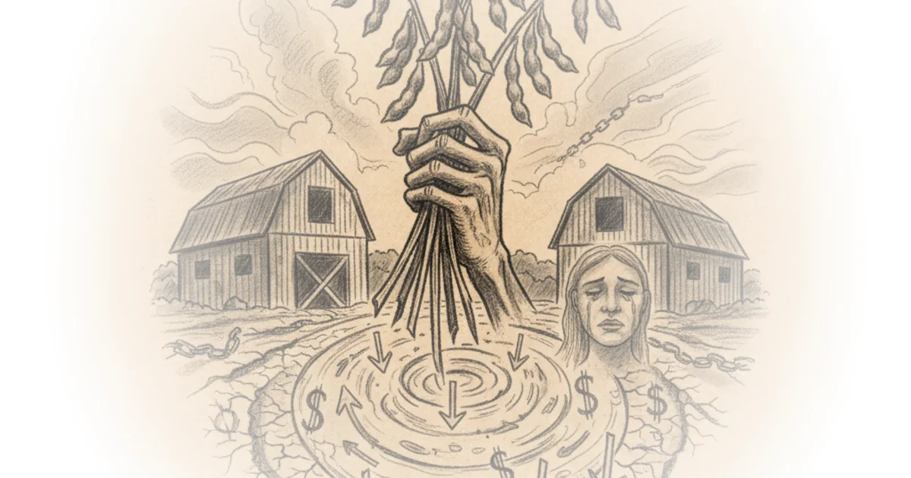

More Perfect Union cuts through the political noise surrounding the American farm crisis to reveal a structural rot that predates any single trade war. While the media narrative fixates on tariffs as the sole villain, the authors argue that decades of corporate consolidation have created a rigged system where farmers are trapped between monopolistic suppliers and a handful of global grain traders. This is not just a story about bad luck or foreign policy; it is a forensic look at how taxpayer money is laundered through the agricultural economy to enrich a tiny elite while rural communities wither.
The Real Nail in the Coffin
The authors immediately dismantle the popular belief that the current crisis is a temporary glitch caused by geopolitical friction. "The tariffs are a problem, but think of it as being in a coffin and we're going to nail the lid. The tariffs are the final nail," More Perfect Union writes, noting that the crisis was already building for decades before trade wars began. This framing is crucial because it shifts the blame from a specific administration's policy to a long-term economic decay that has been ignored by both parties. The piece argues that while the trade war with China exacerbated the pain, the underlying issue is a market structure where a few companies control both the costs farmers pay and the prices they receive.

The evidence presented is visceral and grounded in the lived experience of farmers like Scott Brown and Adam Chapel, who describe watching their generational wealth evaporate. "Five of my customers have committed suicide. That's how serious that is," the authors quote, highlighting the human cost that statistics often obscure. This emotional weight gives the economic argument its teeth. It is not merely about balance sheets; it is about the extinction of a way of life. Critics might argue that global market forces are inevitable and that protectionism could hurt consumers, but the authors effectively counter this by showing how the current "free trade" model has actually benefited foreign competitors and domestic agribusiness giants more than American producers.
We are under monopoly rule on the input and output side.
The Laundering of Tax Dollars
Perhaps the most damning section of the coverage is its analysis of federal aid. The authors expose a perverse mechanism where government bailouts intended to save farmers are immediately siphoned off to pay the debts owed to the very corporations that drove them into ruin. "When I get an aid package, okay, that money will never come to me. It comes straight through my hands into whoever I owe the money to," one farmer explains, illustrating how subsidies function as a transfer payment to input suppliers. More Perfect Union writes, "They're just laundering tax money. None of it stays in the local community," a phrase that perfectly encapsulates the failure of the current bailout model.
The piece details how mergers have decimated competition. In the 1990s, farmers had multiple local seed companies; today, a handful of giants like Bayer and Corteva dominate. "Farmers pay three times higher on inputs than they did in the 1990s," the authors note, pointing to the lack of competition as the driver of inflated costs. This argument holds up well against the backdrop of antitrust history, where regulatory bodies have failed to stop the consolidation of the seed, fertilizer, and machinery industries. The authors suggest that without breaking up these monopolies, any aid package is merely a temporary bandage on a fatal wound.
The Global Squeeze and Political Hypocrisy
The commentary then pivots to the selling side of the equation, where four massive grain companies control nearly 80% of the US market. "We cannot negotiate with a buyer like ADM or Cargill and say, 'No, $10 isn't good enough. I'll give you my soybeans for $12.' They'll just go, 'Okay, get out. Go on,'" the authors paraphrase, describing farmers as "price takers" with zero leverage. This dynamic is exacerbated by trade deals that the authors argue have turned into a race to the bottom, pitting American farmers against subsidized competitors in South America.
The piece delivers a stinging critique of the political establishment, particularly regarding the hypocrisy of officials who claim to support farmers while subsidizing their foreign competition. "I mean, we bailed out my competition. I mean, they're my competition. And we sent taxpayer dollars to them like it was no big deal and hurt my market," a farmer recounts regarding US aid to Argentina. More Perfect Union points out that key administration officials, like Treasury Secretary Scott Bessent, have personal financial stakes in the very agribusiness sectors that are crushing small farmers. This conflict of interest suggests that the political will to fix the system is nonexistent as long as the current power structure remains intact.
A Path Forward: Supply Management
In the final analysis, the authors reject the idea that more bailouts or toothless antitrust investigations will solve the problem. Instead, they advocate for a return to supply management systems that establish price floors, ensuring farmers can cover their costs and make a profit. "Give us a price floor which makes us performance-based... Then it's on me to go do the work," the authors quote, arguing that this would incentivize efficiency without forcing farmers to operate at a loss. The piece concludes that the current system is designed to benefit global grain companies and input suppliers, not the farmers or the rural communities they sustain.
The system is built for global grain companies, not for the people who grow the food.
Critics might argue that supply management could lead to higher food prices for consumers or distort global markets, yet the authors counter that the current system already costs taxpayers billions in emergency aid that never reaches the farm gate. The proposal to shift from emergency bailouts to structural price supports offers a concrete alternative to the cycle of crisis and temporary relief.
Bottom Line
More Perfect Union's strongest asset is its ability to connect the dots between corporate consolidation, failed antitrust enforcement, and the human tragedy of rural suicide, proving that the farm crisis is a feature of the current economic design, not a bug. The piece's biggest vulnerability is its reliance on the political feasibility of breaking up massive global corporations, a task that has eluded regulators for decades. Readers should watch for whether the proposed shift toward supply management gains traction, as it represents the only structural solution that addresses the root cause of the problem.